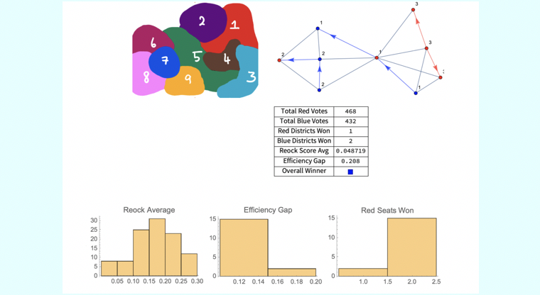

Student Researcher at Columbia University.
Technologist for Social Good.
Columbia University I attend Columbia University in the City of New York as part of the Class of 2024. I'm in the Fu Foundation School of Engineering where I study Operations Research and possibly minoring in Computer Science and Applied Mathematics. On campus, I am involved in many different organizations, see below for more!
Jamestown High School I attended Jamestown High School in Williamsburg, VA from 2016-2020. I graduated as valedictorian of my class with above a 4.5 GPA. In high school, my main activities involved the varsity tennis team, Science National Honor Society, Model UN, Spanish Honor Society, and Envirothon.
United States Census Bureau In summer 2021, I was a Software Engineering Intern at the United States Census Bureau as part of the Civic Digital Fellows Program of Coding it Forward. The project I worked on was part of the Criminal Justice Administrative Records System (CJARS) which is a “nationally integrated repository of data following individuals through the criminal justice system”. I worked with a partner on creating a fully-automated production system for statistical reporting on the data repository. I was selected elected from a competitive applicant pool of 1,700+ students with an acceptance rate of 6% and engaged in the civic tech community through virtual site visits, one-on-one mentorship, and professional development.
Complex Resilient Intelligent Systems Laboratory Since January 2021, I have been a research intern at the Complex Resilient Intelligent Systems Laboratory, led by Professor Venkat Venkatasubramanian of the Chemical Engineering Department at Columbia University. My project is on the Schelling model of segregation, which is a mathematical model developed by the economist Thomas Schelling to analyze segregation behavior. My responsibilities include reading papers, attending weekly meetings, programming computer simulations, performing mathematical analysis, and writing reports. Our research group has been working on writing a paper for publication titled “Statistical Teleodynamics Analysis of Emergent Equilibria in the Schelling Game”.

StudBud In summer 2020, I participated in Columbia's Summer Design Challenge where I co-founded StudBud with 3 other fellow Columbia students. Our goal was to create a tool to help improve social interactions in a world shaped by COVID-19 within our campus. What we created is a platform that matches students to study groups based on their study habits and preferences. In fall semester, we were endorsed by the engineering student council and received over 1200 sign-ups for our service. As the Director of Engineering, I was responsible for creating the matching algorithm and automating many of the processes that went into our service.
Hack the Helyx Hackathon: GreenUp Green Space Detector (3rd place overall) Created a web-app that calculates a "green-score" for a specified location based on the ratio of green space detected from satellite imagery.
HACK:NOW (CALHACKS AND MLH): Cov-tell: Alexa Voice App for COVID-19 Updates (Voiceflow Award, Top 30 Teams) A voice app made using Voiceflow that pulls the most recent COVID-19 data and tells it to the user based on location.
HTHS:HACKS: TraCov: Personalized COVID-19 Risk Analysis Tool (Domain.com Award) A website that calculates an approximate risk score for an individual based on their age, sex, location, and preexisting conditions.
Detecting Gerrymandering Through Visualization and Analysis This project produces an algorithm that uses a completely random method to group vertices in a graph into continuous districts. Using the redistricted map, we perform various calculations that can quantitatively measure gerrymandering, such as Reock score and efficiency gap. With larger amounts of data, we use outlier analysis to attempt to detect intent in redistricting plans within our randomly generated data set.
Modeling the Maximum Potential of Rotational Grazing In this project, agent-based modeling was used in a computer simulation to show the dynamical change and interaction of the cows and the grass in different paddock situations and rotation periods over time. This simulation incorporates an explicit spatial structure, unlike previous models, and was created in NetLogo, a computer programming language that creates multi-agent environment and allows the user to interact with its interface.
Antibiotics Alternative: Investigating the Effect of Bacteriophage Titer on Baterial Populations This project investigates the effect of phage titer and pattern of phage introduction on the elimination of bacteria and biofilm in a controlled environment. A mathematical model of the interaction of phages, bacteria, and biofilm is constructed in NetLogo, a computer programming language for agent-based modeling, and data is pro- duced and analyzed in Wolfram Mathematica. It was concluded that a specific pattern and titer would optimize the elimination of bacteria and biofilm. Download abstract/paper